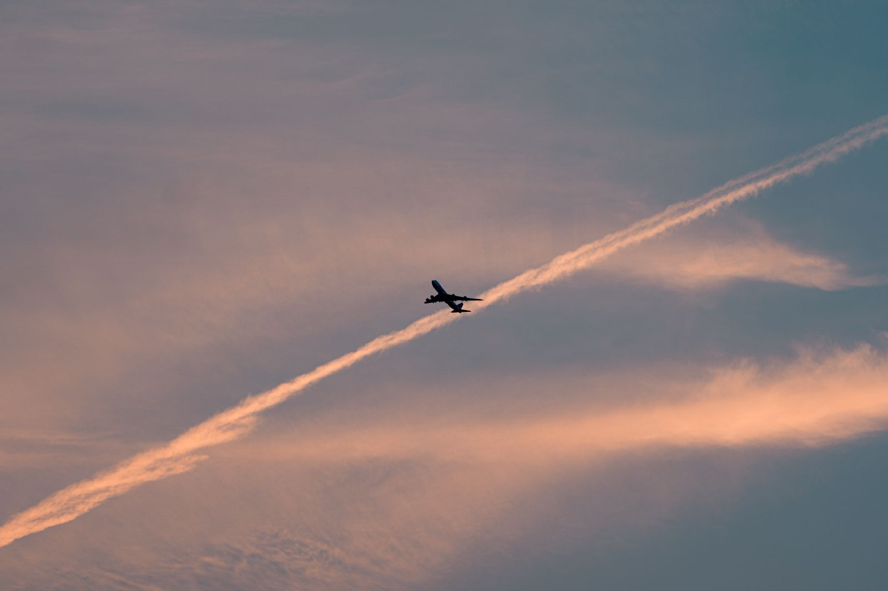

Capítulo 7
Breve historia del vuelo
De las cometas y los globos a los planeadores, el primer avión y los concursos de aviones de papel.
De una cometa en China a un reactor más rápido que el sonido, paso a paso.

7.1 Cronología: hasta 1903
Lee las fechas de arriba abajo. Cada una es un paso que alguien dio antes que tú.
- Siglo V a. C., o despuésLas cometas en China. La tradición atribuye su invención a los pensadores Mozi y Lu Ban. El relato escrito más antiguo es posterior, de hacia el 200 a. C.1,2.
- Hacia 875En Córdoba, Abbas ibn Firnas se lanza, según se cuenta, con unas alas y aterriza de golpe. La historia se escribió siglos después3.
- Hacia 1505Leonardo da Vinci llena un breve códice con estudios sobre cómo vuelan las aves4.
- 21 de noviembre de 1783Pilâtre de Rozier y el marqués d’Arlandes realizan el primer vuelo libre de personas, en un globo Montgolfier sobre París7,8.
- 1799George Cayley graba un disco de plata con un ala fija, un cuerpo y una cola: la primera idea moderna de avión12.
- 1853Un planeador Cayley a tamaño real lleva a un hombre a través de un valle, el primer vuelo registrado en planeador con una persona a bordo11.
- 1884Cerca de San Petersburgo, el monoplano de vapor de Aleksandr Mozhaiski sale de una rampa. Aún se discute si llegó a volar17.
- 1886 a 1894Los aeroplanos de papel aparecen impresos: en una revista infantil en 1886 y en un libro de aviación en 189448.
- 1891 a 1896Otto Lilienthal realiza casi 2000 planeos con 16 diseños. Muere tras un accidente el 9 de agosto de 189615,16.
- 17 de diciembre de 1903Orville y Wilbur Wright hacen cuatro vuelos en Kitty Hawk. El primero dura unos 12 segundos y el último 5922.
7.2 Cometas, un salto, un cuaderno

Mucho antes de los motores, la gente ató un ala a un hilo, saltó con alas en los brazos y dibujó máquinas en cuadernos.
La tradición nombra a Mozi y Lu Ban, en el siglo V a. C., como los primeros fabricantes de cometas en China. El relato escrito más antiguo es posterior: Guinness da hacia el 200 a. C. La Biblioteca del Congreso añade que las cometas del Pacífico casi seguro son anteriores1,2.
Hacia el año 875, en Córdoba, el inventor Abbas ibn Firnas construyó unas alas y se lanzó, según se cuenta. Cayó de golpe y se lastimó la espalda. Después dijo que se le había olvidado ponerse una cola3.
Hacia 1505 Leonardo da Vinci escribió su Códice sobre el vuelo de los pájaros. Dibujó máquinas de alas batientes, pero una persona tiene muy poca fuerza muscular para batir un ala como un ave4.
7.3 Globos sobre París

En 1783 volaron primero una oveja, un pato y un gallo. Dos meses después les siguieron las personas.
El 19 de septiembre de 1783 los hermanos Montgolfier soltaron un globo de aire caliente desde el palacio de Versalles, ante el rey Luis XVI. Una oveja, un pato y un gallo viajaban en una cesta de mimbre. Unos ocho minutos después bajaron en un bosque, vivos5,6.
El 21 de noviembre de 1783 Jean-François Pilâtre de Rozier y François Laurent d’Arlandes hicieron el primer vuelo libre de personas, en un globo Montgolfier. Despegaron del castillo de la Muette, en París7. Un vuelo de prueba atado, con Pilâtre de Rozier a bordo, se hizo el 15 de octubre8.
Un globo no es un ala. Flota y va adonde va el viento. No planea.
7.4 Cayley y Lilienthal

Antes de que un motor pudiera llevar un ala, alguien tenía que aprender qué hace el ala.
En 1799 George Cayley grabó un disco de plata. Una cara muestra un ala fija sobre un cuerpo en forma de barca, con una cola. Britannica dice que expuso la idea moderna de avión: un ala fija, con partes separadas para la sustentación, el empuje y el control12,11.
Su trabajo terminó en 1853 con un planeador a tamaño real que llevó a su cochero, el primer vuelo registrado de un planeador con persona. Otra fuente dice que voló unos 900 pies a través de Brompton Dale11,14.
Otto Lilienthal voló desde 1891. En 1896 había hecho casi 2000 vuelos con 16 diseños de planeador15. Se estrelló el 9 de agosto de 1896 y murió al día siguiente16.
7.5 Mozhaiski y Zhukovski
Un hombre construyó un avión de vapor. Otro descubrió, con lápiz y papel, por qué sustenta un ala.
En 1884, en Krásnoye Seló, cerca de San Petersburgo, Aleksandr Mozhaiski probó un gran monoplano con motores de vapor. No podía despegar desde el suelo llano, así que lo lanzaron por una rampa inclinada. Los primeros relatos dicen que se ladeó sobre un ala y se estrelló; otros posteriores, que antes dio un pequeño salto17.
Nikolái Zhukovski estudiaba cómo fluye el aire. En 1895 visitó a Otto Lilienthal en Berlín y le compró uno de sus planeadores. En 1906 publicó una regla para la sustentación de un ala: depende del aire, de la velocidad y de un remolino de aire alrededor del ala19.
En 1918 fundó el TsAGI, el Instituto Central de Aerohidrodinámica de Rusia, y fue su primer director. El TsAGI lo llama el padre de la aviación rusa20,19.
7.6 Kitty Hawk, 1903

Cuatro vuelos en una mañana, y el más largo duró menos de un minuto.
El 17 de diciembre de 1903 Wilbur y Orville Wright hicieron los primeros vuelos con motor y controlados de una máquina más pesada que el aire en Kitty Hawk, Carolina del Norte. El primero despegó a las 10:35 de la mañana22.
Se turnaron. Orville voló unos 12 segundos y 120 pies, 37 m. Wilbur voló unos 175 pies, y luego Orville unos 200. Al final, Wilbur recorrió 852 pies, unos 260 m, en 59 segundos22,23,24.
Enviaron un telegrama a su padre. Por el camino, 59 segundos se convirtieron en 57, y el nombre de Orville llegó mal escrito25. Antes habían construido planeadores. El motor llegó el último.
7.7 Cronología: de 1906 a hoy
Después de Kitty Hawk, el vuelo creció deprisa. Estos son los cien años siguientes.
- 1906En Moscú, Nikolái Zhukovski publica una regla para la sustentación de un ala19.
- 12 de noviembre de 1906En París, el brasileño Alberto Santos-Dumont vuela 220 m en 21,5 segundos con su 14-bis, ante observadores oficiales26.
- 13 de mayo de 1913Cerca de San Petersburgo, Ígor Sikorski vuela el Grand, un gigante de cuatro motores30.
- Febrero de 1914El siguiente gigante de Sikorski, el Iliá Múromets, eleva a 16 personas y un perro30.
- Enero de 1923En Getafe, cerca de Madrid, el autogiro de Juan de la Cierva despega por primera vez bajo un rotor que gira con el viento. El 31 de enero recorre un circuito de más de 4 km33,34.
- 14 de octubre de 1947Chuck Yeager vuela el Bell X-1 más rápido que el sonido42.
- Febrero de 1967Un concurso de Scientific American recibe 10 941 aviones de papel de 49 estados de EE. UU. y 26 países más50.
- 31 de diciembre de 1968El soviético Tu-144 se convierte en el primer avión de pasajeros supersónico en volar43.
- 2 de marzo de 1969El Concorde vuela por primera vez, desde Toulouse45.
- 2003Se retiran los últimos Concorde45.
- HoyLos aviones de papel tienen récords de distancia y de tiempo en el aire. El capítulo 9 los recoge.
7.8 París, 1906: el 14-bis
Un brasileño despegó de la hierba en París mientras los jueces esperaban con sus cronómetros.
El 12 de noviembre de 1906 el brasileño Alberto Santos-Dumont voló con su 14-bis 220 metros en 21,5 segundos, a unos 6 metros del suelo, en París26.
Lo vieron y lo midieron jueces del Aéro-Club de France. Fue el primer vuelo en Europa de más de 100 metros29. Unas semanas antes, en octubre, el 14-bis ya había dado un salto de unos 60 m28.
Los Wright habían volado tres años antes, en una playa solitaria y con poca gente mirando. Por eso en Brasil muchos llaman a Santos-Dumont el primero en volar. Este libro cuenta los dos: los Wright hicieron los primeros vuelos con motor y controlados, y Santos-Dumont el primero que unos jueces midieron en Europa.
7.9 Los gigantes de Sikorski
En 1913, en Rusia, un joven ingeniero voló un avión con cuatro motores y una cabina.
El 13 de mayo de 1913, a las diez de la noche, Ígor Sikorski elevó el Grand desde un aeródromo de San Petersburgo. Tenía cuatro motores de 100 caballos y alas de 28 m de punta a punta. Subió a unos 120 m, giró, subió unos 75 m más y volvió a girar. Voló 10 minutos30.
En agosto de 1913 el Grand llevó a ocho personas durante una hora. El siguiente gigante de Sikorski, el Iliá Múromets, era aún mayor. En febrero de 1914 elevó a 16 personas y un perro30.
En el verano de 1914 Sikorski y su tripulación volaron el Iliá Múromets de San Petersburgo a Kiev y vuelta, unos 2600 km, y apagaron un incendio de motor por el camino30.
7.10 Getafe, 1923: el autogiro
Un ingeniero murciano quería una aeronave que no se cayera del cielo. Su respuesta fue un rotor que gira solo.
En 1919 el murciano Juan de la Cierva vio cómo su gran biplano se destrozaba en su segundo vuelo. Se propuso diseñar una aeronave más segura32.
Su autogiro tiene arriba un rotor que no mueve ningún motor. Al avanzar la máquina, el aire sube entre las palas y las mantiene girando, como una semilla de arce al caer. Si el motor se para, el rotor sigue girando y el aparato baja con suavidad32.
En enero de 1923, en Getafe, cerca de Madrid, su C-4 despegó por primera vez. El 31 de enero recorrió un circuito cerrado de más de 4 km en tres minutos y medio, a unos 25 m de altura. La clave fue una articulación en la raíz de cada pala, para que pudiera batir arriba y abajo32,33.
7.11 Mujeres que volaron
En 1910 una francesa obtuvo la primera licencia de piloto concedida a una mujer. Pronto la siguieron otras, de Rusia a España y Estados Unidos.
El 8 de marzo de 1910 la francesa Raymonde de Laroche se convirtió en la primera mujer del mundo con licencia de piloto35. En agosto de 1911, cerca de San Petersburgo, Lidia Zvereva obtuvo la licencia número 31, la primera de una mujer en el Imperio ruso36.
Un editor de periódicos aconsejó a la estadounidense Bessie Coleman que aprendiera a volar en Francia, donde las personas negras encontraban más respeto. Fue allí, y el 15 de junio de 1921 obtuvo su licencia, la primera de una mujer afroamericana37,38.
El 15 de septiembre de 1928, en Getafe, cerca de Madrid, María Bernaldo de Quirós se convirtió en la primera española con licencia de piloto39. El 20 y 21 de mayo de 1932 Amelia Earhart cruzó sola el Atlántico sin escalas, de Terranova a un prado de Irlanda del Norte, en unas 15 horas. Ninguna mujer lo había hecho antes41.
7.12 Más rápido que el sonido

En 1947 un pequeño avión cohete naranja voló más rápido que el sonido.
El 14 de octubre de 1947 Chuck Yeager voló el Bell X-1 a Mach 1,06, unos 1127 km/h, a unos 13 000 m de altura. Un bombardero B-29 lo subió hasta unos 7000 m y lo soltó; entonces se encendió su motor cohete. Su forma copiaba la de una bala de ametralladora42.
Después llegaron los aviones de pasajeros. El soviético Tu-144 voló primero, el 31 de diciembre de 1968, unos dos meses antes de que el anglofrancés Concorde volara por primera vez, el 2 de marzo de 196943,45.
El Concorde volaba a unas dos veces la velocidad del sonido, entre 17 y 18 km de altura, tan alto que los pasajeros veían la curva de la Tierra. Cruzaba el Atlántico en menos de cuatro horas45.
7.13 Llega el avión de papel

El papel vino de China, el plegado se hizo arte en Japón y los niños plegaban dardos mucho antes de que nadie escribiera sobre ellos.
Las crónicas de la corte atribuyen a Cai Lun haber presentado al emperador chino la fabricación de papel en el año 105, aunque restos más antiguos indican que el papel empezó unos 200 años antes46. En Japón el plegado se convirtió en arte: un libro impreso en Kioto en 1797 enseña a plegar grullas de papel unidas47.
Los aviones de papel son más difíciles de rastrear. Un proyecto de historia recoge uno en la revista infantil St Nicholas en 1886 y dardos de papel en un libro de 1894 sobre máquinas voladoras de Octave Chanute48.
En febrero de 1967 Scientific American organizó un concurso con 10 941 participaciones de 49 estados de EE. UU. y 26 países más. El ala volante de papel de seda de Frederick Hooven se mantuvo 10,2 segundos; el avión de Robert Meuser voló 89 pies, unos 27 m50,51.